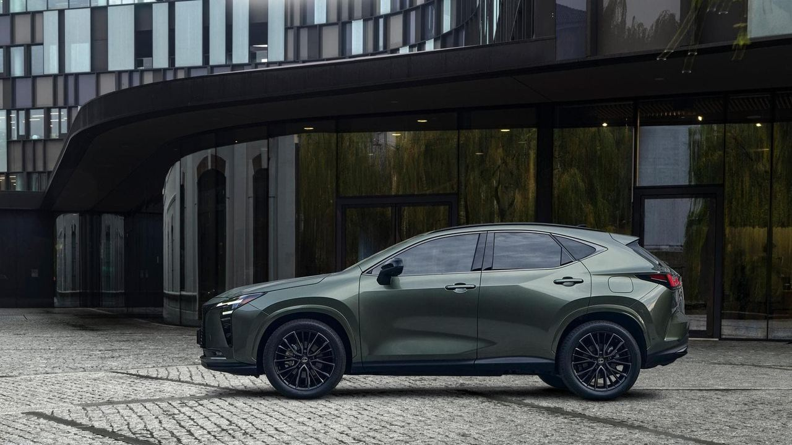
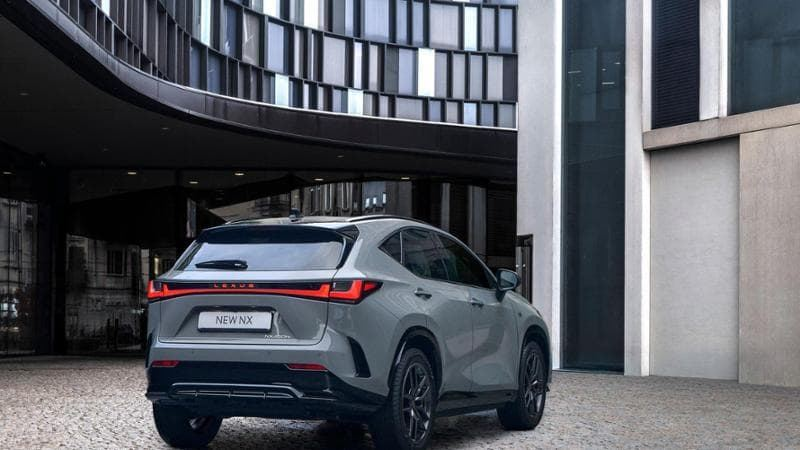
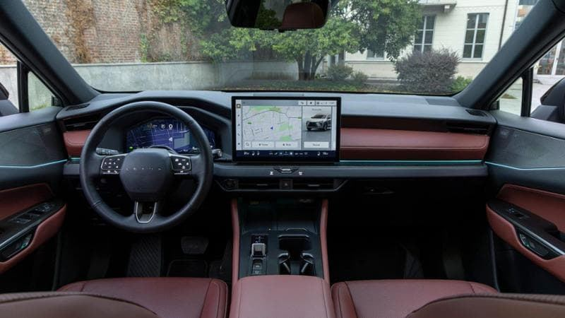

Lexus · 歐洲首發 · 日本2026-11-23
Lexus NX 改款歐洲首發：無框沙漏格柵、「Clean x Tech」新座艙
Lexus relaunches its best-selling NX: The plug-in now has a range of over 100 km in electric mode
Lexus 在杜林 ATP 年終賽期間發表 NX 中期改款的歐洲版，NX 約占品牌歐洲年銷量的三分之一。外觀改動集中在車頭，首度採用無框沙漏形格柵與新頭燈；座艙依「Clean x Tech」概念全面重做，2027 年春季進入義大利經銷商。
設計解析 Design Notes
- 無框格柵沙漏形格柵拿掉外框，讓格柵與車頭面融成一體，搭配重新設計的頭燈與新燈號。
- F Sport 黑化F Sport 版用鋼琴黑飾件、專屬 20 吋鋁圈與紅色卡鉗拉開與標準版的差異。
- 極簡座艙儀表板整合 12.3 吋數位儀表與新的 14 吋中控螢幕，依 Clean x Tech 概念追求簡潔實用。
- 隱藏式按鍵Responsive Hidden Switches 平時藏在儀表板內，手靠近才亮起；Lexus Sensory Concierge 串連氛圍燈、音樂、空調、座椅溫度與香氛。